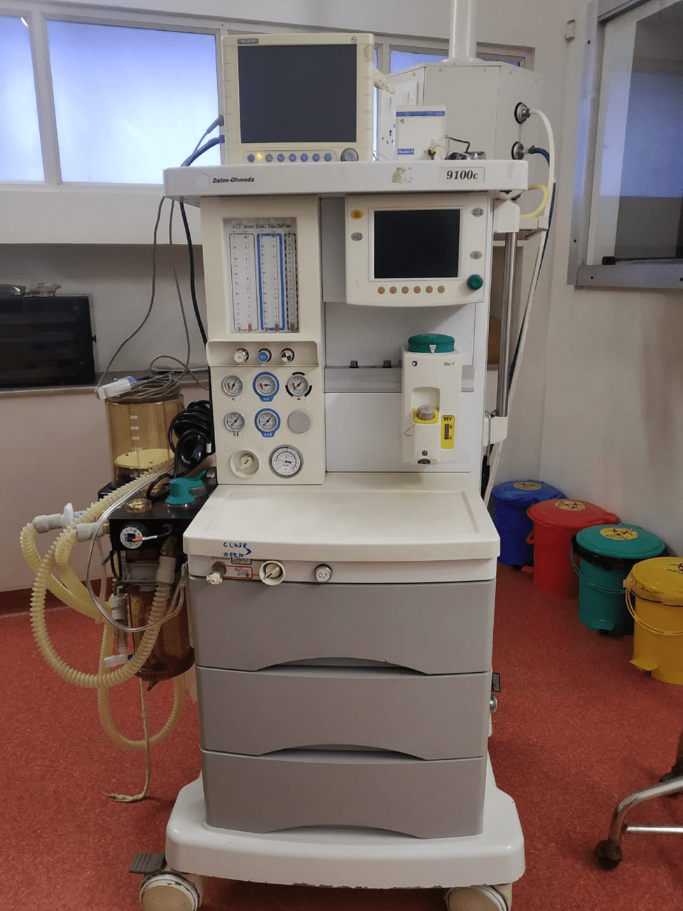

LAPAROSCOPY
Some times certain patients may not be amenable for removal of obstruction, stones etc by endoscopic procedures. These patients may be benefitted if the same results are achieved by laparoscopic approach. Laparoscopic Donor Nephrectomy, Radical Nephrectomy, Pyeloplasty, Ureterolithotomy, Sacrocolporraphy, Herniorraphy are being done in our centre. All the essential Laparoscopy instruments with HD Camera are available
RECONSTRUCTIVE UROLOGY
Patients with Urethral Injuries have been successfully treated in our centre. Urethroplasties, subtitution Urethroplasty Procedures are done regularly. Vesico Vaginal Fistula repair, Vesico Ureteral Fistula repairs have been performed in large numbers. Male and female Sling procedure for incontinence are also being done successfully in our centre.
URODYNAMICS
When there is problem in holding urine for desired duration, or when there is involuntary leakage of Urine, very special tests may be required. For this purpose Very sophisticated LABORIE URODYNAMIC EQUIPMENT IS AVAILABLE at SB Hospital
Urodynamic tests are used to Diagnose Patients who have lower Urinary Tract Symptoms of Urgency, Frequency, Incontinence, slow stream of urine etc. These tests are given to both Men and women. A Urodynamic Test is used to measure Nerve and Muscle Function, Pressure around and in the Bladder, Flow Rates, and other Factors. These tests look at how well the Bladder, Sphincters, and Urethra are storing and releasing Urine.
UROGYNAECOLOGY
SB Hospital was one of the earliest centre to offer treatments for Female Urological Problems. Laborie Urodynamics was started in the year 2001. Very sophisticated Laborie Urodynamics is available for assessment of Detrusor Function & Pressure, flow rates for lower tract. Various Surgical procedures like Pubo Vaginal Sling Surgery, TVT, TOT for Female Stress Incontinence are offered for such patients.
PEDIATRIC UROLOGY
SB Hospital was one of the earliest centers in Tamil Nadu to offer pediatric Urology Services. SB hospital has all the infrastructure for operating on Neonatal & Pediatric Patients. Antenatal Patients with Ultrasound detected Urological Anomalies are regularly referred here for counselling and follow up Treatments. Children with Congenital Anomalies of Urinary Tract are being successfully treated here. Calculus Disease in Pediatric Age group have been managed with minimally Invasive Techniques.
OPERATING ROOMS
There are three state of art operating rooms with Laminar Flow & HEPA filter, with high end Central Sterilisation department which has equipments like Ethylene Oxide Sterliser, 200 Litre Horizondal Autoclave, Ultra Violet Sterliser etc. Laminar Fow in the Operating Rooms reduces the wound Infection rates to Nil positive check cultures.
Anaesthesia Work Station

Storz HD Camera
80 watt Holmium Laser